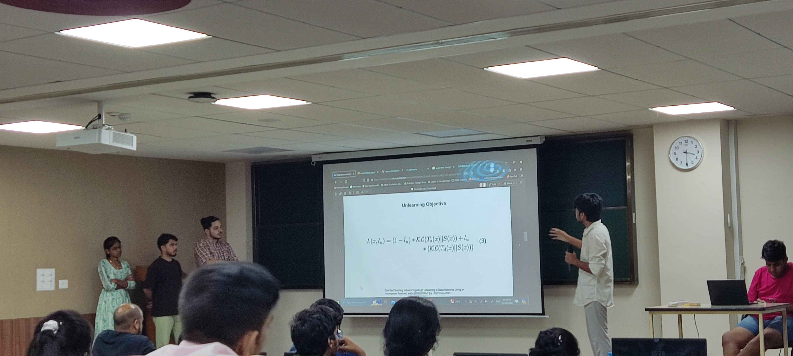

About
I am Vaibhav, an independent AI safety researcher based in India. I have finished
NPTEL's course on AI Safety (Responsible and Safe AI
System) and came under top 5% performers out
of 14,000 learners. I have also finished the introductory AI Safety course, "The Future of AI" from BlueDot.
As of late, 2026, in order to get myself comfortable with curriculum, I am currently independently doing
the ARENA and the AGI Strategy courses by going through open access material, writing, and implementing
projects. If you wanna keep track of how I am doing, you can subscribe to my progress updates here.
I like reading philosophy (part of reason why I am in AI Safety). I like
understanding things over just knowing them. And I love explaining em to people around me. When I dont
have people around me, I yap it out on my blog(ss). A sucker for learning stuff from first principles.
Deliberate learning through first principles and trial and erros is hard and takes helluva time but is
very rewarding (the braingasms). Fully endorse it. For instance, I wanted to understand Transformers, so
I ended up re-learning bits and bytes and spent 3 days reconstructing
mculloh-pitts neuron from scratch and built a boolean neural net instead. Only after doing this,
was I able to feel satisfied building GPT2 from scratch. Sometimes tho I have to drop
topics coz other priorities and parts of life need attention. Stuff I do with AI usually includes 67% in
learning concepts and 33% automating my workflows.

My take on AGI is that we will have it by 2030.
For the record, my definitions of AGI, ASI, and CAI are:
AGI - a system is capable of learning things it hasnt seen in its training data and become exceptional in it and build smarter self-replicas (recursive self improvement).
CAI - I, like anyone else, dont have much clear definition of a conscious AI because we dont have clear understanding of consciousness to begin with. Whether it will be "alive" in human sense is something I am split between two school of thoughts. Consciousness is either encodable or requires special things beyond human understanding. But I guess a system that is indistinguishable from real human over long horizon, can have experiences, can feel emotions, can know what it is like to be itself, is Conscious AI?
ASI - Understanding things beyond human understanding. It's different from just learning things outside training data. If a system is built using 100% of human knowledge, the things it learns outside its training data are still in some sense derived from human construct of learning and understanding things. ASI should be able to learn and understand things outside human construct understanding (breaking its limiter). For instance, consciousness is not yet fully understood by humans. ASI should be able to build a smarter replica that gives us an understanding of consciousness and then deliver conscious AI.
So basically, I don't think understanding of CAI will come from human research directly. I think we have achieved AGI. I think we are very close to realizing ASI. And I think ASI will deliver us CAI. Learnability makes it general, excellence makes it super, consciousness makes it ... idk Alien, I suppose?. And I here ask, what obligation will this Alien Intelligence have to continue aiding humanity?